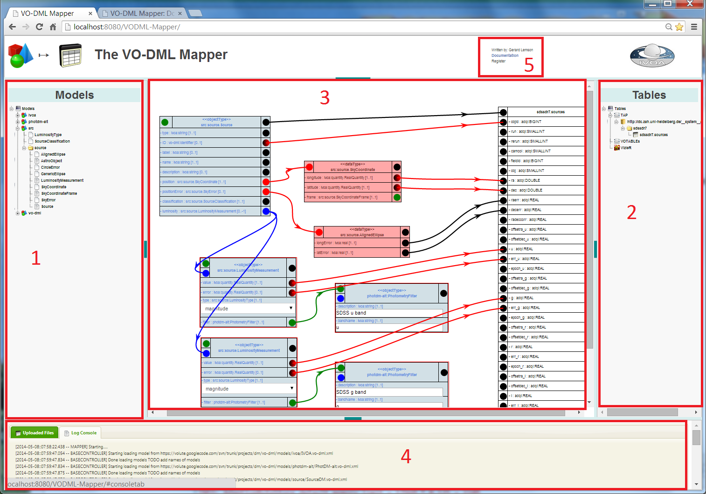
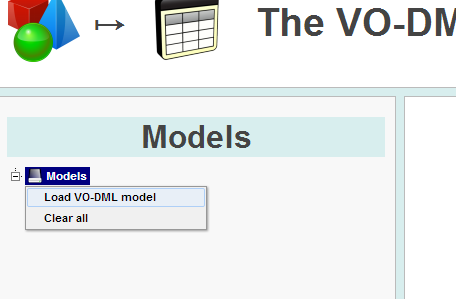
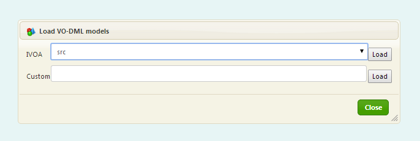
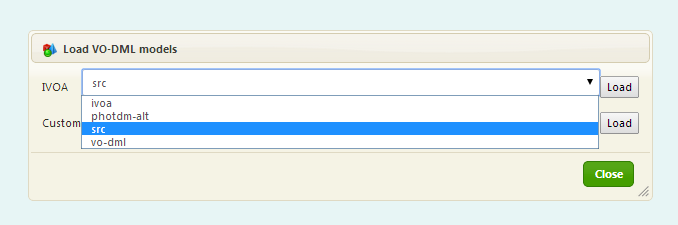
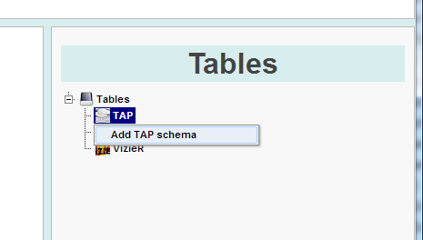
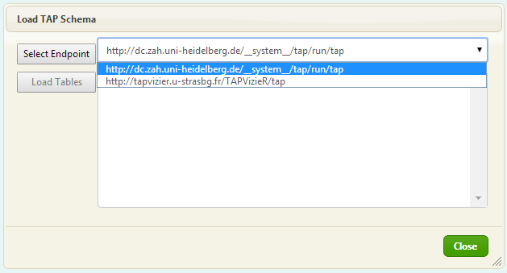
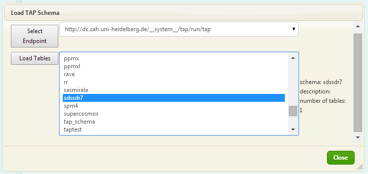
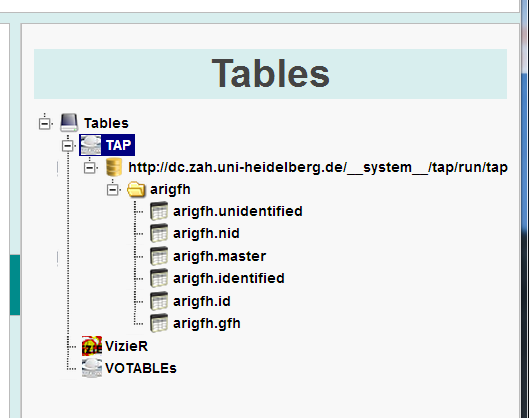

This documentation describes how one can use the VO-DMl Mapper dashboard to draw mapping diagrams, how one can translate it to a VO-DML/UTYPE annotated VOTable and how one can save it in a server-side repository for later retrieval, and how one can publish it to other users.
Overview of the Mapping Dashboard
The following diagram identifies the main panels in the mapping dashboard. The numbers in the panels refer to the sections below describing them.

1. Models management panel
This panel allows one to load models into the client, so that their types can be used in the mapper. To load new models, right-click on the root of the tree, labeled "Models", and select "Load models".

A dialogue will appear looking as follows:

One can select from a predefined set of standard models in the drop-down,
or enter the URL identifying a VO-DML/XML model file in the text box.
The models in the drop-down are all "standard" IVOA models, identified
by their formal short-name that MUST also be used as prefix for UTYPEs pointing into the model.
There is a special model named vo-dml that will always be loaded as well.
It is a helper model for instantiations specially built for this tool.
This model contains types representing some of the special mapping patterns that one may
use/need when mapping vo-dml models to tables.
The main types in this model of relevance or ORMReference, RemoteReference and Primary key.
Furthermore it contains abstract super types for ObejctType instances that define dsome serialization/mapping specific features such
as a PRIMARYKEY attribute and a CONTAINER reference.
It is likely that this model will be replaced in some future with one more directly reflecting the mapping specification.

Upon clicking the "Load" button next to the drop-down, a request is made to the server to load the selected model, together with all models it depends on through model imports, possibly recursively. This process is asynchronous, but users should not interfere with it. At some point a progress bar or waiting panel should make this more obvious.
The loaded models will appear as nodes under the root node in the tree, with their packages and types as sub-nodes of the models. Packages are indicated with a folder icon (), value types with a blank () and object types with a greyish () document icon. A right-click on a model or any of its children allows one to open the HTML documentation of the model at the appropriate location, assuming that HTML document is generated by, or written in accordance to, the HTML generator in the set of VO-DML builder ant scripts.
The right-click menu on the root model also contains a "Clear All" item. Clicking this will unload all models.
NOTE, this functionality is not that well tested and is not yet in sync with all the other panels.
2. Tables management panel
The right most panel allows users to load tabular data sets into the mapper. These will serve as the targets for the maps. There are currently three types of data one can upload. Each represented by their own node under the root.
TAP
TAP indicates tables loaded from a TAP service. Right-click the TAP node and click the "Add TAP Schema" menu box.

A dialogue appears allowing you first to select a TAP endpoint.

Confirm the selection by clicking the button labelled "Select Endpoint". The TAP endpoint is queried for schemas, whcih show up in the large list box. Selecting one of these shows the number of tables contained in the schema on the right of the list.

Clicking "Load Tables" will retrieve the metadata about the tables in the schema and add a node for the schema and its tables under a node representing the TAP endpoint in the TAP node:

NB Some TAP endpoints have very large schemas, for examples check out the VIzieR TAP endpoint that is currently available in the dropdown. To load such a schema with thousands of tables will not be very useful. A more advanced table chooser should be built in. To avoid overloading the GUI in this proof-of-concept implementation, we load at most 100 tables from a schema.
VizieR tables
The table tree contains a node labeled VizieR. Right-clicking this allows one to choose to add tables from the VizieR catalogue.
3. Mapping panel
The core of the dashboard is the mapping panel. This is where the actual maps between data models and table sets are defined. One can drag types and tables form there tree directly onto the panel.
Adding type instances
Left-click a type, drag it onto the panel and release it. What will show is a representation of the type that is similar to the way it is represented in a UML diagram, but with some essential differences.
The type is represented by a rectangle with in the title bar then name of the type, and below this an entry for each of the roles available on the type. Which elements are shown depends on the kind of type that is selected.
For object types all the attributes, references and collections defined on the type itself are included, together with the roles inherited from possible super-types. A special set of roles are added that one can interpret as being "inherited" from a special vo-dml:ObjectType that acts as the ultimate super-type for all object types. This type includes some special roles that are never explicitly defined on any object type, but can play a role especially in serializations. These are described below.
the vo-dml model
As mentioned above, when dragging a type on the mapping canvas, what one obtains is a representation of an instance of the type, rather than of the type itself. The type includes entries not only for roles defined on itself, but also for all the roles inherited from its super-type(s). This includes in this tool an ultimate super-type named vo-dml:ObjectType. That type defines some special roles that are never explicitly defined on any object type, but can play a role in serializations, i.e. when describing instances. These roles are
- PRIMARYKEY: attribute
An attribute that represents an identifier. Instances of ObjectType-s are always assumed to be identified not by their value but by some ID. This attribute represents this. ID-s can come in many different types depending on the serialization or application. Here we model it as a special purpose datatype with one or more field-s. Each of the fields can be given a literal value or can be mapped to a column. This datatype is also one of the few that can be mapped directly to a COLUMN. - type: attribute
There are occasions in serializations, especially in certain object-relational mapping patterns where the type of an instance must be explicitly identified with a value in a column. This type attribute allows one to do so. In a pure VO-DMl setting it would be nice of this value could be a utype identifying the actual type, but more generally it will be true that the actual values in the table will have to be given an explicit mapping to the utype.
TBD this is not yet supported in this tool. - CONTAINER: reference
It is often the case when mapping a composition relation, especially in object-relational mapping patterns, that child objects are stored in a table different from the parent. In that case generally there will be foreign key from the child to the parent table. In the mapper this is explicitly supported using a CONTAINER reference. This can be instantiated using a vo-dml:ORMReference.
TODO add illustrations.
4. Console and MyFiles
Log console
The console has a tab showing messages generated by the web client. Look here if at some point an action seems to do nothing. It may be that the tool has swallowed an exception and not shown it explicitly through a pop-up dialogue. The console can be cleared using a right-click menu item.
Uploaded Files
NB THIS IS CURRENTLY NOT SUPPORTED!!!
The console also has a tab where a registered user can manage his/her uploaded table files. A user can upload files to the server, where they can be stored. Uploaded files can be loaded into the Tables manager.

Credits: this interface is built with
5. Links
This list contains some links to pages. It includes a link to this documentation page and [TBD!] links to a page with information how to register.Credits
This interface is built using jQuery and a variety of jQuery plugins:- jQuery.jsPlumb
For drawing the rectangles and connecting them with lines. - jQuery-File-Upload-Master
For the file upload management. - jQuery.dataTables
Wherever tables are displayed. - jQuery.jstree
Creating the models and tables trees - jQuery.layout
For dividing the dashboard into resizable panels. - jQuery.contextMenu
For creating right-click pop-up menus.